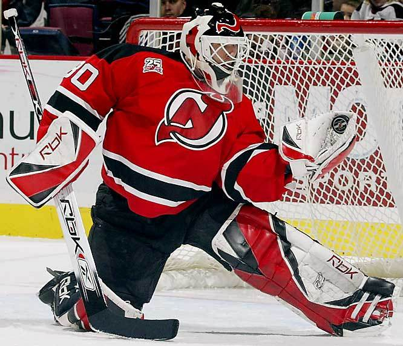

News
Emrick: Devils without Brodeur will 'seem strange'
NBC broadcaster Mike "Doc" Emrick admitted it's going to be odd not seeing goaltender Martin Brodeur in a New Jersey Devils jersey for the first time in 23 seasons.
"It will seem strange, but there's always that handoff," Emrick said. "The same question was raised when Steve Yzerman wouldn't be in Detroit anymore. Who takes over? As it turns out, it was Nicklas Lidstrom, not only as captain but as the face of the franchise.
"So that will be the intriguing thing; who will be the new face in New Jersey?"
At the end of last season, Brodeur cited a desire to play more games and that he would explore the free agent market to land with a team willing to provide that request. But since becoming an unrestricted free agent July 1, Brodeur has yet to sign a contract. At this stage, it appears the 42-year-old will be a spectator while awaiting another opportunity at the outset.
"I have been wondering who would find work first: Ray Shero, Dan Bylsma or Martin Brodeur," Emrick said Wednesday. "I think my answer is Marty because he'd be one of the first one or two No. 1 goalies out there if another goes down [by injury]."
Brodeur went 19-14-6 in 39 games with the Devils last season, and Cory Schneider, who becomes the starter this season, finished 16-15-12 in 45 games.
Emrick, who did the play-by-play for New Jersey for 21 years that featured Brodeur as he set numerous records, acknowledged it will be an unusual situation for the Devils.
"Whenever the jersey retirement is, that will be quite a ceremony, and if he winds up on another team and comes back to play in New Jersey, that will be rather awesome too," Emrick said. "I guess every franchise has this where a player that goes two decades comes back, so what happens?"
Brodeur, who holds NHL records in the regular season for career games (1,258), wins (687), shutouts (124) and most 40-win seasons (eight), won the Stanley Cup three times with the Devils (1995, 2000, 2003) and lost in the Stanley Cup Final twice (2001, 2012). He won the Vezina Trophy as the League's best goaltender four times (2003, 2004, 2007, 2008).
"I know that [Brodeur] provided me and a lot of Devils fans with a lot of lifetime thrills just from getting a chance to watch him play whether you were a fan or not," Emrick said. "When you saw that kind of excellence, you realized you were seeing something very special. We wish him well, but it will be unusual won't it? This arena (Prudential Center) has never seen him not as a regular guy."
Rangers' McDonagh ready to assume leadership role
Days after the New York Rangers were eliminated by the Los Angeles Kings in five games in the Stanley Cup Final, defenseman Ryan McDonagh still was thinking about the shot, a power-play blast in overtime of Game 5 that beat Kings goaltender Jonathan Quick but hit the post. Kings defenseman Alec Martinez scored the Cup-winning goal in the second overtime.
Ready to assume a leadership role, and maybe even the captaincy, McDonagh still thinks about that shot sometimes. And the next time he gets that opportunity, he plans on burying it.
"There hasn't been too many times in my career where I've almost started to celebrate before [the puck goes in]," McDonagh said. "I thought the way it was shot, from the left side and the far post, I didn't see it go out right so I thought it was in."
McDonagh raised his hands in the air a split second before the shot hit the post behind Quick and went out the other end of the crease. It was an unfortunate ricochet that closed a landmark season for the Rangers and McDonagh.
After starting 2013-14 as one of New York's emerging young players, McDonagh established himself as the best two-way weapon on the team. He set career highs in practically every statistical category, played for the United States at the 2014 Sochi Olympics and was named team MVP. During the Stanley Cup Playoffs, coach Alain Vigneault hailed McDonagh's play and insisted that he was worthy of Norris Trophy consideration.
For McDonagh and the Rangers, the season turned on one game.
It was against the Islanders on Oct. 29, with the Rangers entering 3-7-0 and McDonagh enjoying a strong if unspectacular start to the season that he was called on to man the power play. He tied the game early in the third period with his first career power-play goal and the Rangers went on to win 3-2. The win was big for the team and for McDonagh, who started a run of eight points in eight games that day.
"I think I got put on the power play and it kind of opened my eyes that this is a big responsibility for me, I want to make the most of it," McDonagh said. "I gained a lot of confidence from that, knowing the coaches wanted me out there and teammates were pushing for me to be successful out there and help us win games. I think when that moment happened, it slowly transferred into overall helping the team."
He's ready to build on that breakout season, and he's more than happy to assume the Rangers' vacant captaincy, should it be decided he's worthy of the responsibility.
"Just with the way the four years have gone here, I feel real comfortable here in New York. I feel comfortable with the guys and I think they have an understanding of my attitude and what I try to do on the ice," McDonagh said. "There's no egos in this group at all. Whatever happens with it, I don't think it will change the way we interact and the way we expect each other to play. Our group is real close in that aspect. It would obviously be a great honor and we'll see what happens, but it would definitely be a great responsibility."
McDonagh could make a compelling case for the captaincy, which was vacated when Ryan Callahan was traded to the Tampa Bay Lightning last season. Former Rangers captain Brian Leetch has voiced his support for McDonagh, who has a few models he would follow if he got the captaincy.
Like most people in New York, McDonagh has developed a strong respect for New York Yankees captain Derek Jeter. But that appreciation for Jeter was heightened when McDonagh attended the 2014 Major League Baseball All-Star Game at Target Field, near his hometown in St. Paul, Minn. It was there McDonagh saw Jeter, who announced in February this season would be his last, honored by the crowd.
"He's built up his identity because he's won championships. He's performed at a high level consistently. My main focus is to every summer and every season work on things I think I can get better at," McDonagh said. "There's really no ego with him. He continues to work and continues to prove people wrong. I think it's a good model to follow."